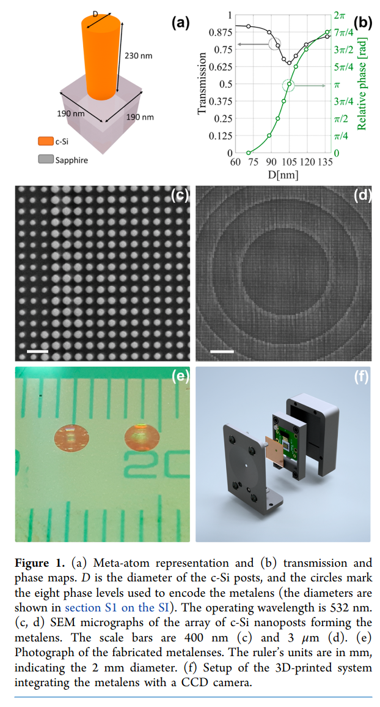
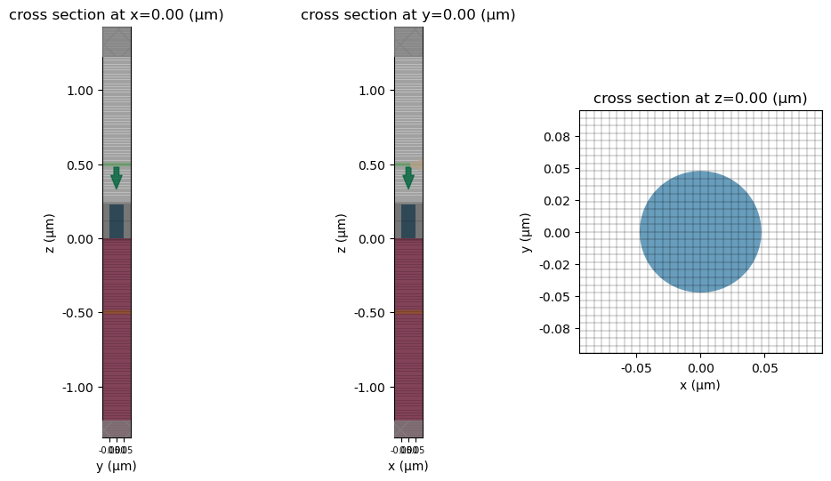
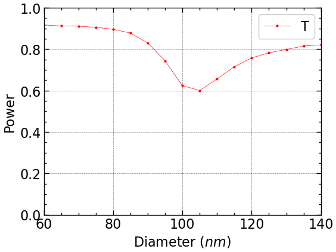

Yankun (Alex) Meng

This is reproduction of the results in 1(b) using Diffraction Monitor. Parameters from the paper:
P= 190nm h= 230nm D= [60, 135]nm \lambda = 532nm
# 0 Define a FreqRange object with desired wavelengths
lda0 = 0.532
freq0 = td.C_0 / lda0
print("%E" % freq0)5.635197E+14D = np.arange(0.060, 0.140, 0.005)
print(D)
sims = {}
run_time = 50
def simulate(D):
for i, diameter in enumerate(D):
cylinder = td.Structure(
geometry=td.Cylinder(
center=[0, 0, h / 2],
radius=diameter/2,
length=h,
axis=2),
medium=si
)
sim = td.Simulation(
size = sim_size,
grid_spec = grid_spec,
structures = [cylinder, substrate],
sources=[source],
monitors=[monitor],
run_time= run_time / freq0,
boundary_spec=bc
)
sims[f"d{i}"] = sim[0.06 0.065 0.07 0.075 0.08 0.085 0.09 0.095 0.1 0.105 0.11 0.115
0.12 0.125 0.13 0.135 0.14 ]simulate(D)
print(sims.keys())
sim_actual=sims['d7']
# Always visualize simulation before running
fig, (ax1,ax2,ax3) = plt.subplots(1, 3, figsize=(12, 6))
ax1.tick_params(axis='x', labelsize=7)
ax2.tick_params(axis='x', labelsize=7)
sim_actual.plot(x=0, ax=ax1)
sim_actual.plot_grid(x=0, ax=ax1)
sim_actual.plot(y=0, ax=ax2)
sim_actual.plot_grid(y=0, ax=ax2)
sim_actual.plot(z=0.1, ax=ax3)
sim_actual.plot_grid(z=0, ax=ax3)
plt.show()dict_keys(['d0', 'd1', 'd2', 'd3', 'd4', 'd5', 'd6', 'd7', 'd8', 'd9', 'd10', 'd11', 'd12', 'd13', 'd14', 'd15', 'd16'])
20:23:21 EDT Started working on Batch containing 17 tasks.
20:23:33 EDT Maximum FlexCredit cost: 0.425 for the whole batch.
Use 'Batch.real_cost()' to get the billed FlexCredit cost after the Batch has completed.
20:23:42 EDT Batch complete.
# this uses scienceplots to make plots look better
plt.style.use(['science', 'notebook', 'grid'])
# plot transmission, compare to paper results, look similar
fig, ax = plt.subplots(1, 1, figsize=(6, 4.5))
plt.plot(D*1000, power, "o-", color="red", ms=2, lw=0.5, label="T")
plt.xlabel(r"Diameter ($nm$)")
plt.ylabel("Power")
plt.ylim(0, 1)
plt.xlim(60, 140)
plt.legend()
plt.savefig("power_wfov", dpi=300)
plt.show()